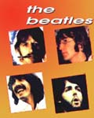
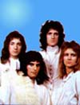

XX век — время новаторства в классической музыке. Одним из известнейших композиторов был Альфред Шнитке (р. 1934). В концепционной музыке Шнитке традиционный музыкальный язык сосуществует с многообразием современной композиционной техники.
В нашем веке появились многие новые направления в музыке, корни которых, тем не менее, уходят в глубь истории. Одним из самых значительных явлений стало появление четверки «Битлз», которая определила не только музыкальные увлечения, но и стиль жизни целого поколения молодежи 60-70 годов. Главное в песнях «Битлз» — чудесные мелодии, которые музыканты называют «evergreen» — вечнозеленые. Лучшей мелодией 70-х годов стала песня «Yesterday» группы «Битлз».


Открытием 80-х годов стала группа «Queen». Ее песня «Show must go on» по сей день остается популярной и любимой. В отличие от песен многих современных групп, важное значение в песнях «Queen» играют тексты — философская попытка осмысления жизни и своей роли в ней.
В Советском Союзе в период «оттепели» возникло новое направление в поэзии и музыке — авторская песня. Его создали люди разных профессий — актеры, журналисты, физики, литераторы — которые сами писали стихи и музыку и сами исполняли свои песни. Одним из самых любимых и известных авторов был актер Владимир Высоцкий (1938-1980). С 1964 года Высоцкий работал в Московском театре драмы и комедии на Таганке. Он стал широко известен благодаря фильмам «Вертикаль» (1967), «Короткие встречи» (1968), телефильму «Место встречи изменить нельзя» (1979).